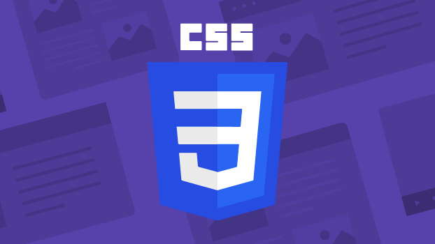

CSS 3
Cascading Style Sheets (CSS): CSS is defined as a method sheet language that provides web designers control over how an internet site communicates with web browsers including the formatting and display of their HTML documents.
SCSS or cascading sheet may be a text-based coding language that specifies the website formats and the way a site communicates with web browsers. The language allows web developers to regulate various style elements and functionalities, like layout, color, fonts, and therefore the formatting and display of HTML documents.
The main goal (as a method sheet language) was to separate document content from document presentation, which incorporates style elements, like color, layout, and fonts. CSS handles the design and feel a part of an internet page. Using CSS, you will control the color of the text, the design of fonts, the spacing between paragraphs, how columns are sized and laid out, etc.
CSS instructs the display of the HTML on how the web site will display at the user's end. Let us have a glance on the benefits and drawbacks of CSS.
Advantages
CSS is crucial for specifying and applying repeated styles to elements efficiently.
CSS ensures consistent style application across multiple sites with just one instruction.
Web designers needs to use few lines of programming for every page improving site speed.
CSS simplifies web development and maintenance through efficient, site-wide changes in just one line of code, saving time
It is less complex therefore the effort are significantly reduced.
It helps to form spontaneous and consistent changes.
It has the power for re-positioning. It helps us to determine the changes within the position of web elements who are there on the page.
These bandwidth savings are substantial figures of insignificant tags that are indistinct from a mess of pages.
It reduces the file transfer size.
Easy for the user to customize the online page
Disadvantages
CSS, CSS 1 up to CSS3, result in creating of confusion among web browsers.
With CSS, what works with one browser might not always work with another. The web developers need to test for compatibility, running the program across multiple browsers.
There exists a scarcity of security.
There might be cross-browser issues while using CSS.
The language world is complicated for non-developers and beginners. Different levels of CSS i.e. CSS, CSS 2, CSS 3 are often quite confusing.
The programing language world is complicated for non-developers and beginners. Different levels of CSS i.e. CSS, CSS 2, CSS 3 are often quite confusing.
CSS works differently on different browsers. IE and Opera supports CSS as different logic.
There might be cross-browser issues while using CSS.
There are multiple levels which creates confusion for non-developers and beginners.